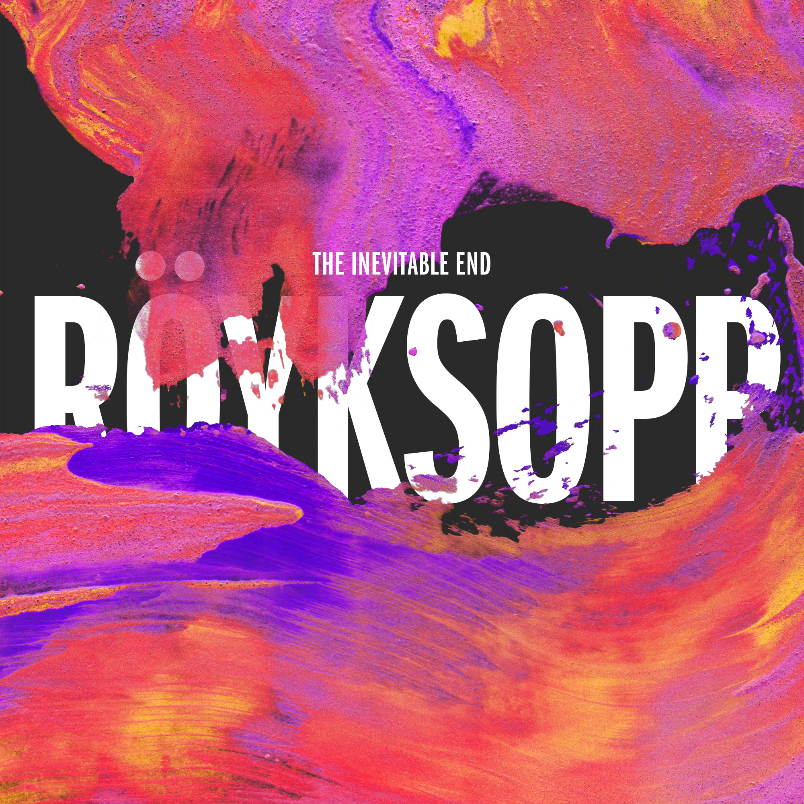

Royksopp – Inevitable end
Geplaatst door: Harry Potter fan op Augustus 16, 2014
Genre: dance
Het onvermijdelijke einde. Het alom bekende duo Svein Berge en Torbjørn Brundtland, beter bekend als Röyksopp, kondigde hun afscheid al eerder aan, maar voor de vele fans en volgers blijft die keuze moeilijk te behappen op het moment dat het ook daadwerkelijk zover is. De albumtitel spreekt wat dat betreft boekdelen. Dit is ontegenzeggelijk hun laatste kunststukje. Röyksopp, opgericht in 1998, houdt het voor gezien. Berge en Brundtland vinden hun muziek ‘in de traditionele geperste vorm’ niet meer van deze tijd. De Noren blijven muziek creëren, maar niet langer op de manier zoals we dat jarenlang gewend waren. Ze kunnen echter teren op een prachtig oeuvre, met nummers als Eple, Poor Leno, What Else Is There?, The Girl And The Robot en Remind Me als (enkele) hoogtepunten. Op The Inevitable End keert het tweetal terug naar de wortels van hun gerenommeerde, gewaardeerde elektropop en downbeat. Het krachtige introspectieve karakter van de band is weer aangevuld met fraaie zanglijnen, onder meer van Robyn (op het meeslepende Monument) en Ryan James (tijdens het kleine, emotionele Sordid Affair). De rode draad op het album betreft somberheid en donkere onderwerpen, al is de energie vanaf de eerste seconde van opener Skulls voelbaar. En dat gaat door totdat Berge en Brundtland hun trouwe publiek na twaalf tracks bedanken middels afsluiter Thank You. Het eind van een tijdperk. Helaas onvermijdelijk.
Dit is ontegenzeggelijk hun laatste kunststukje.
- Skulls
- Monument (T.I.E. Version)
- Sordid Affair
- You Know I Have To Go
- Save Me
- I Had This Thing
- Rong
- Here She Comes Again
- Running To The Sea
- Compulsion
- Coup De Grace
- Thank You
- Do It Again (RYXP Version)
- Goodnite Mr. Sweetheart
- Caramel Afternoon
- Oh No
- Something In My Heart